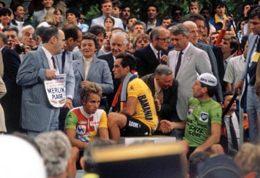

A ge is not just about the policemen getting younger and trying to figure out how to operate an iPhone. It may also be when you are able to tell your children that you once saw an actual French cyclist wearing the actual yellow jersey of the Tour de France having actually just won la grande boucle .
It’s 39 years, 11 months and about three weeks since I watched a tired and slightly diminished-looking Bernard Hinault get out of a car in a backstreet in Lisieux – once the massive crowd pressing on the car doors had been moved on by the heavies – before pulling on that maillot jaune , getting wearily on to his bike, before spinning past, time after time in the late-evening sunlight in the town’s annual post-Tour critérium , an exhibition race which still takes place on the first Tuesday after the Tour.
If you had suggested, that mellow evening, to any of the crowd who lined the streets in the Norman town that, 40 years later, no Frenchman would have managed to succeed Hinault in winning the Tour, they would have laughed in your face and assumed you had over-indulged on the local cidre bouché .
Back then the French had won nine of the past 11 Tours and, while Hinault was heading for retirement, the obvious successor was waiting in the wings: Laurent Fignon, who had won the 1984 race in dominant style and was, 12 months on, getting over a tendon operation. Fast forward to this weekend in Lille when the Tour has its Grand Départ – on French soil, which is something of a departure – and no Frenchman will be named among the race favourites, as has been the case more often than not since I first reported on the Tour in 1990.
The national soul-searching will go on, having kicked off in 1992 when Fignon was heading for retirement and it was also clear that the other “next Hinault” of the 80s, Jean-François Bernard, wasn’t going to win the Tour either.
Prospective French Tour winners have come and gone: from Richard Virenque and Christophe Moreau in the 90s to the most recent generation: Romain Bardet and Thibaut Pinot, both retired, and Warren Barguil, who is on the edge of retirement and starts this Tour for the Picnic PostNL team as a minder to a very young Scot, Oscar Onley.
There may be French stage wins this year, from Lenny Martinez, Romain Grégoire or Kévin Vauquelin perhaps, and at a pinch one of the trio might stretch to victory in the King of the Mountains jersey. If a Frenchman makes the top 10 overall it will be a surprise, and the pressure seems to have got to the last Frenchman to get near the podium – David Gaudu (fourth in 2022) – is in such poor form he won’t even make this year’s race.
On the final podium in 1985: (left to right) Greg Lemond, Bernard Hinault and Sean Kelly.Photograph: John Pierce Owner PhotoSport Int/Shutterstock
Hinault is as baffled as anyone by the drought, but that’s not new: he has been baffled by it since I first interviewed him in 1993. Interviewed this week by L’Équipe , he said he “wouldn’t have bet a centime on [going 40 years without a French Tour winner]”. He added: “It’s a terrible thing to say, but it can’t be avoided: there are no more big champions in France capable of winning the Tour. We don’t have a big machine, 1000cc, to make the difference – they are 750cc.”
The Badger’s last Tour victory, 1985, was midway through a key decade in cycling history when the sport went from being small scale and parochial to truly multinational. Since then, victory in the Tour has gone to Ireland, the USA, Australia, Great Britain, Colombia, Germany, Denmark and Slovenia . With hindsight, it now seems that for 40 years after the second world war the French dominated a far more parochial race; the sport then opened up leaving far less space for them.
Added to that, over the years, the base of the pyramid of amateur cyclists that will produce Tour winners has drastically reduced. Forty years ago, every hamlet in Brittany and Normandy had its bike racer and its bike race. The amateur calendar has been eviscerated and those races that remain are struggling for entries, while the bigger amateur teams are signing British cyclists in droves, presumably because local talent is hard to find.
Finding great Tour champions is a haphazard business. No one would have predicted two greats emerging from Slovenia simultaneously any more than they would have expected Sean Kelly and Stephen Roche or Bradley Wiggins, Chris Froome and Geraint Thomas to emerge at the same time. It’s a perfect storm for France: fewer potential champions to choose from and greater competition for those that emerge.
Looking for the next Hinault, all eyes are on an 18-year-old, Paul Seixas, who has made waves in his first year as a professional after winning the 2024 world junior time trial championship, and who is rightly considered too young for this year’s Tour. The history books are peppered with junior world champions from France who dropped into obscurity – anyone remember Johan Le Bon or Pierre-Henri Lecuisinier? – so it is wise to be circumspect. Seixas has clearly worked that out, as when asked what his ambitions were for the next five years, he just said: “I want to follow my path, to grow like every rider.” Like it or not, the eyes of a nation will be on him when, and if, he finally gets to the Tour.